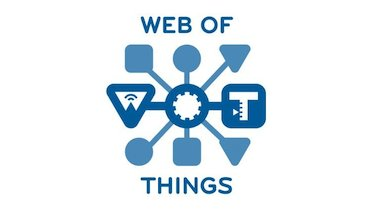
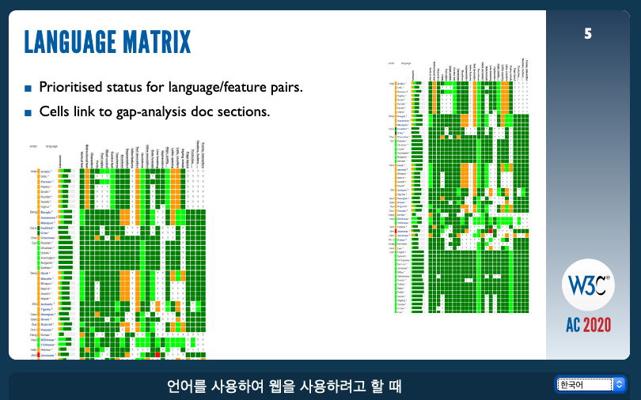
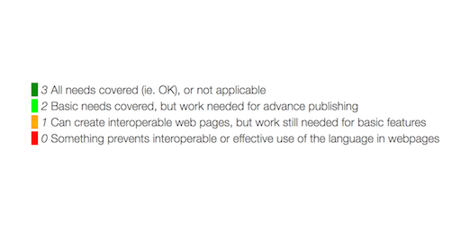

The @w3c "Verifiable Credentials Data Model 1.0" #WebStandard has been translated into Korean: https://ssimeetupkorea.github.io/vc-data-model/ Thank you @jshim101! #decentralized #identity #translation https://twitter.com/zikzo_eth/status/1267757116627906563
https://twitter.com/w3cdevs/status/1267760425451560960🗓️ June@VirtualW3C: updated @w3cx course and a series of WoT online events: live chat, plugfest, workshop, group meetings - https://www.w3.org/participate/eventscal.html
3 June: @JalanbirdW3C joins the @AseanCio 5th live chat on "What the future holds with @w3c's #WoT?"
Book your seat! https://us02web.zoom.us/meeting/register/tZIkcuuupzMvHtDTOpnKc1qXyTip-B75cd34
https://twitter.com/w3cdevs/status/12678167912265031768 June: The @w3c #WoT #InterestGroup and Thing-to thing research group (T2TRG) organize an online workshop on self-description and discovery. See agenda and candidate topics at https://github.com/t2trg/2020-06-helsinki
https://twitter.com/w3cdevs/status/126781679671682252815-19 June: #WoT plugfest open to all #IoT developers interested in possible scenarii and demos of #WoT. More details are in https://www.w3.org/WoT/IG/wiki/F2F_meeting_2020_2nd#WoT_Plugfest_2
https://twitter.com/w3cdevs/status/126781679848684749222-26 June: the @wot groups are meeting online https://www.w3.org/WoT/IG/wiki/F2F_meeting_2020_2nd#WoT_F2F
18 June: @sabouzah talks about digital #accessibility and how to include people with #disabilities in the Web design process #A11yAfrica2020 #a11y Register to attend this @inABLEorg webinar! https://twitter.com/inABLEorg/status/1272046107934314496
https://twitter.com/w3cdevs/status/126781680158221107230 June: Join the updated @w3cx #MOOC: "#HTML5 Coding Essentials and Best Practices" https://www.edx.org/course/html5-coding-essentials-and-best-practices w/ @micbuffa @edXOnline
https://twitter.com/w3cdevs/status/1267816803528437760The @ab's priorities in year 2020 are: #Globalization, #Strategy, #Incubation, Legal entity, Process 2020, Tooling, etc. Check them out: https://www.w3.org/wiki/AB/2020_Priorities
https://twitter.com/w3cdevs/status/1268138374440853505These elected @ab participants join the continuing ones: @fantasai (#W3CInvitedExpert), Avneesh Singh (@DAISYConsortium), Eric Siow (@intel), @LeonieWatson (@TetraLogical), @cwilso (@Google), and Judy Zhu (@AlibabaGroup).
Congrats to @t (@mozilla), Tatsuya Igarashi (@Sony), @frivoal (#W3CInvitedExpert), @TzviyaSiegman (@wileyglobal) and @daithesong (@Apple)!! 👏👏 https://www.w3.org/2020/05/04-ab-nominations.html https://twitter.com/w3c/status/1268121594276257792
https://twitter.com/w3cdevs/status/1268138372981239810We discussed the context and goals of bringing better #MachineLearning primitives to the Web when the original physical workshop was first announced
https://twitter.com/w3cdevs/status/1224740848144920576
A new #W3CWorkshop on the horizon: the Web and #MachineLearning workshop, originally planned in March as a physical event, is becoming a virtual event built as a set of pre-recorded talks and live discussions https://twitter.com/w3c/status/1269931509089214464
https://twitter.com/w3cdevs/status/1270381755019800576To bring your perspective on how Web #browsers should evolve to accompany the deployment of #MachineLearning #services and #applications, please consider applying to give a talk at the event https://www.w3.org/2020/06/machine-learning-workshop/speakers.html
https://twitter.com/w3cdevs/status/1270381757058121733.@wseltzer, W3C Head of Strategy, presents recent changes to the Strategy Funnel where @w3c records its new and upcoming work (#CommunityGroup, #W3CWorkshop, #WorkingGroup, etc.):
https://www.w3.org/2020/05/AC/talk/strategy-funnel#align
https://youtu.be/SPGDlB89OMk
The Strategy Funnel tracks exploration, investigation, incubation, evaluation and chartering of @w3c's work. It is developed in #github to help with early engagement: https://github.com/w3c/strategy/projects/2
https://twitter.com/w3cdevs/status/982232776920334339
https://twitter.com/w3cdevs/status/1273239721603403777Thx to the #community shaping #Webstandards, the Web helped people endure the challenges of social distancing and remote work. Wrt #Covid_19, two #CommunityGroups, were created: https://www.w3.org/community/web-vs-covid19/ (data sharing) and https://www.w3.org/community/covid-19/ (remote work practices and tools)
https://twitter.com/w3cdevs/status/1273239725307047937... and the joint @w3c / @opengeospatial "Maps for the Web" workshop: https://twitter.com/w3c/status/1268895102799396865
https://twitter.com/w3cdevs/status/1273239729203482625As for #W3CWorkshops, @wseltzer introduces the ones that are scheduled for #2020: the "Web and #MachineLearning" workshop: https://twitter.com/w3cdevs/status/1270381752893280257
https://twitter.com/w3cdevs/status/1273239727043469313Other @w3c workshops under consideration are related to "User-friendly Smart Agents on the Web - Voice interaction": https://github.com/w3c/strategy/issues/221 and to "Bundling Interactive Media Content on the Web": https://github.com/w3c/strategy/issues/209
https://twitter.com/w3cdevs/status/1273239730776309760As co-chair of @tag, @torgo gives an update of recent Technical Architecture Group (TAG) activities and how best to engage with the TAG going forward: https://www.w3.org/2020/05/AC/talk/tag-update#align or directly on @w3c's new #youtubechannel: https://youtu.be/3Cp5ExEXkCg
Dan Appelquist first explains the @tag's mission and deliverables - see our summary: https://twitter.com/w3cdevs/status/957974903122219008
https://twitter.com/w3cdevs/status/1273585066501963777The @tag also works on the "Web Platform Design Principles" document, primarily designed for spec #developers. These principles have been collected during the TAG's discussions in the context of design reviews:
https://w3ctag.github.io/design-principles/
https://twitter.com/w3cdevs/status/1273585071996506115Design reviews are core to @tag's work, along joint work with other groups and #developer community engagement. All requested reviews take place in the Design Review #github repo in the issues registry:
https://github.com/w3ctag/design-reviews/issues
https://twitter.com/w3cdevs/status/1273585070230704136The @tag also updated its "Security and Privacy Self Review Questionnaire" (by @lukOlejnik) which helps spec. authors to think about all the #security and #privacy issues that they might have, within any particular specification:
https://w3ctag.github.io/security-questionnaire/
https://twitter.com/w3cdevs/status/1273585075427446784It also refers to the TAG "Ethical Web Principles", where each principle is now individually linkable:
https://www.w3.org/2001/tag/doc/ethical-web-principles/ Hear @torgo explain the motivations behind this doc. (itw recorded during #w3cTPAC2019): https://youtu.be/MeppC87Werg
https://twitter.com/w3cdevs/status/1273585073690984450#Translation The @w3c Web of Things (#WoT) Thing Description #WebStandard has been translated into Japanese https://www.w3.org/TR/2020/REC-wot-thing-description-20200409/ #dotHTML5 #w3c_keio @wot Thank you @omnidirect! https://twitter.com/omnidirect/status/1264881747625250816
https://twitter.com/w3cdevs/status/1274975168629276680#developers please share your overall experience, thoughts, frustrations and expectations in finding content on https://w3.org Thanks! https://twitter.com/w3c/status/1275340945752502272
https://twitter.com/w3cdevs/status/1275391446242275330To make the Web world-ready, lots are happening in the @webi18n initiative, led by @ri, as summarized in this presentation last month: https://www.w3.org/2020/05/AC/talk/i18n#align (with Chinese, Japanese and Korean captioning) or on YouTube: https://youtu.be/PKA_6ABpBpg
For #developers and #browsers implementers, @webi18n's language enablement framework is a set of tools and procedures to make sure that text layout and typographic needs of world scripts and languages are built into @w3c technologies (#HTML5, #CSS, etc.):
https://w3c.github.io/typography/
https://twitter.com/w3cdevs/status/1275777833416212481For #users and content #authors, the @webi18n Language Matrix tracks 79 languages and displays their support on the Web in the form of a 'heat map': https://w3c.github.io/typography/gap-analysis/language-matrix.html
https://twitter.com/w3cdevs/status/1275777838659108871To explore gaps in language support on the Web, @webi18n is continuously looking for expert contributors to collaborate and help move this work forward by documenting gaps, and creating tests. All the work and technical discussions are happening in #github https://www.w3.org/International/layout
https://twitter.com/w3cdevs/status/1275777844392706049The language matrix cells (colored in dark green, light green, orange and red) link to gap-analysis sections that each describe the problem, the current level of support in specifications and browsers, and the severity of the problem for the user.
https://twitter.com/w3cdevs/status/1275777842291367938See also this video where @ri presents how W3C Internationalization makes a reality of the Web being World Wide, and introduces the Internationalization Initiative which is reinforcing that program: https://youtu.be/mx2eDHujM4c
https://twitter.com/w3cdevs/status/1275777848100388864.@webi18n has recently published 21 documents that explore gaps in language support:
https://twitter.com/webi18n/status/1273232132727623681
https://twitter.com/w3cdevs/status/1275777846372376576Hear, hear! The @w3c_systeam released new pages presenting the @w3c groups. This work consisted in structuring and organizing a wide range of somewhat scattered resources available on http://w3.org, and making them easier to find and use: https://www.w3.org/groups/
The work is not done yet as more info will be added in the future, such as groups' meeting calendars and #github
references.
https://twitter.com/w3cdevs/status/1275796472991305729These public pages highlight a variety of groups which enable @w3c to pursue its mission through the creation of #WebStandards, guidelines, and supporting materials: #WorkingGroups #CommunityGroups #BusinessGroups and #InterestGroups, + 2 permanent groups (@w3ctag
and @ab)
https://twitter.com/w3cdevs/status/1275796476279631878#CommunityGroups and #BusinessGroups give #developers, #designers, and anyone passionate about the Web a place to hold discussions and publish ideas. These groups are proposed and run by the #community:
https://www.w3.org/community/
https://twitter.com/w3cdevs/status/1275796481249816576#InterestGroups act as forum for the exchange of ideas. They bring together people who wish to evaluate potential #Web #technologies and policies: https://www.w3.org/groups/ig/
https://twitter.com/w3cdevs/status/1275796479618289664#WorkingGroups typically produce deliverables (e.g., #WebStandards, technical reports, #software, test suites, and reviews of the deliverables of other groups): https://www.w3.org/groups/wg/
https://twitter.com/w3cdevs/status/1275796477894426627This new set of pages will be integrated in the full site redesign W3C is conducting over the next few months. Stay tuned!
https://twitter.com/w3cdevs/status/1275796482839457792#browser engine #developers, #GPU #hardware vendors, #3D software engineers, etc. are invited to read this proposed charter from the "#GPU (Graphics Processing Unit) for the Web" #w3c #WorkingGroup:
https://www.w3.org/2020/06/gpuweb-charter.html https://twitter.com/w3c/status/1273585590026592260
See also https://twitter.com/w3cdevs/status/1172398360914907138
https://twitter.com/w3cdevs/status/1276176845038379020Another proposed charter to deliver a #WebTransport #API enabling #developers to make use of new network capabilities: https://www.w3.org/2020/06/proposed-webtransport-charter.html https://twitter.com/w3c/status/1272558779650002944
See also https://twitter.com/w3cdevs/status/1247493707131162626
https://twitter.com/w3cdevs/status/1276183639064219648This #YouTube channel, called W3COfficial, is 'unsurprisingly' the official place where we intend to post @w3c videos we produce (mostly interviews and talks): https://www.youtube.com/W3COfficial
You may have noticed in our tweets the past few weeks that we point to videos hosted on @YouTube e.g.
https://twitter.com/w3cdevs/status/1275777833416212481
https://twitter.com/w3cdevs/status/1277580502661238785W3COfficial already hosts videos from past workshops, e.g. the Web & Games #W3CWorkshop
https://www.youtube.com/watch?v=IjF_f--i13Y&list=PLNhYw8KaLq2VudeCD36bbVAf_F_6sHyT7 #w3cgames2019
https://twitter.com/w3cdevs/status/1277580507023360000... or our past #developer #meetups e.g. this one in 2019 #w3cdevs2019
https://www.youtube.com/playlist?list=PLNhYw8KaLq2Voakn_PdQY2mrFoU2yAtPA
https://twitter.com/w3cdevs/status/1277580509804212224We've created a few thematic playlists - let us know if you have any feedback on how the channel is organized and what other materials you might like to find there!
https://www.youtube.com/user/W3Conf/playlists
https://twitter.com/w3cdevs/status/1277580512392077312